第6讲 · 一元函数微分学的应用（二）——中值定理、微分等式与微分不等式
据《张宇考研数学基础30讲·高等数学分册（2026版）》整理 · 覆盖原书 P211–P232
本讲导读
这一讲是基础30讲里证明题最集中的地方，选择、填空、解答都会出，数学一二三通吃，数二数三常考其中的方程与不等式部分。主线三块：中值定理（10条，考场上直接拿来用，无须重证）、微分等式（讨论方程根的存在性与个数）、微分不等式（三大证明路径）。张宇把重难点标在：平均值定理、罗尔定理的推论、用函数性态和中值定理证微分不等式（印P211）。本讲的考试目标是两条（原书引考研大纲，印P211）：理解闭区间上连续函数的性质（有界性、最大值最小值定理、介值定理）并会应用；理解并会用罗尔定理、拉格朗日中值定理和泰勒定理，了解并会用柯西中值定理——注意"理解并会用"和"了解并会用"的措辞差三档，罗尔、拉格朗日、泰勒是必须拿来就能写的。
站注·真题大数据：中值定理证明在考频统计里属第二梯队——"隔年一道大题"，不像极限计算那样年年必考，但一考就是 10 分以上的解答题，而且很少单独考，多与方程根、不等式、积分（第11讲）拼成综合题。所以这一讲属于"低频高杀伤"：可以两年不考，不能一年不练。
学法上先把定理条件和辅助函数构造表背熟，再逐题自己动笔证——这一讲看会不等于会写，差距全在动手上。罗尔是全讲的枢纽，推广罗尔、罗尔原话、多次罗尔都从它长出来。原书在费马定理前给了一张串联图（印P214）：\(f(x)\xrightarrow{\text{拉格朗日}} f'(x)\xrightarrow{\text{泰勒}} f''(x)\)，而 \(f(x)\xleftarrow{\text{定积分/积分中值}}\int_a^b f(x)\mathrm{d}x\)——这张图把"函数值—导数—高阶导数—积分"四层的通道画全了，第8讲的积分中值定理（定理10）就是从拉格朗日推广出去的，复习到后面要回来对照。
知识框架
- 中值定理（10 大定理，考场上可直接引用，无须重证）
- 涉及函数 \(f(x)\)（只要求连续）
- 定理1 有界与最值定理：闭区间上连续必有界、必取得最大最小值
- 定理2 介值定理：\(m\leqslant\mu\leqslant M\) 时 \(f(\xi)=\mu\)
- 定理3 平均值定理：\(n\) 个点函数值的算术平均仍是某点的函数值
- 定理4 零点定理及其推广（端点极限异号型，含无穷远情形）
- 涉及导数 \(f'(x),\,f^{(n)}(x)\,(n\geqslant 2)\)
- 定理5 费马定理：可导 + 极值 \(\Rightarrow f'(x_0)=0\)（驻点概念）
- 定理6 罗尔定理及其推广（端点极限相等型）；核心功夫是构造辅助函数
- 乘积求导公式逆用一族（\(f^2\)、\(ff'\)、\(f\mathrm{e}^{\lambda x}\)、\(f\mathrm{e}^{-F(x)}\) 等）
- 商求导公式逆用一族（\(f/x\)、\(f'/f\)）
- 定理7 拉格朗日中值定理：用导函数的值控制函数值的增减
- 定理8 柯西中值定理：参数方程视角，"分母想凑什么就配什么"
- 定理9 泰勒公式（拉格朗日余项用于区间、佩亚诺余项用于一点邻域；麦克劳林公式 + 七个常用展开式）
- 涉及积分：定理10 积分中值定理（由拉格朗日中值定理推广而来，见第8讲例8.8）
- 涉及函数 \(f(x)\)（只要求连续）
- 微分等式（方程 \(f(x)=0\) 的根 = 函数的零点 = 曲线的交点）
- 存在性：零点定理（含推广）、罗尔定理及其推论、实系数奇次方程至少有一个实根
- 个数：单调性证"至多"、罗尔原话（\(f^{(n)}=0\) 至多 \(k\) 根 \(\Rightarrow f=0\) 至多 \(k+n\) 根）
- 标准结构：存在性 + 唯一性两段式配合起来考
- 微分不等式（数学一综合题里常见的小步骤，数三也常考用导数方法证明）
- 用函数性态证明（首选：研究辅助函数的单调性、凹凸性、最值、正负）
- 用常数变量化证明（把不等式中的常数换成 \(x\) 才能求导）
- 用中值定理证明（拉格朗日 / 泰勒；中值 \(\xi\) 满足 \(a<\xi<b\)，本质仍是单调性加放缩）
核心概念与定理
定理6.1 有界与最值定理
\(f(x)\) 在 \([a,b]\) 上连续，则 \(f(x)\) 在 \([a,b]\) 上有界，且必取得最大值 \(M\) 与最小值 \(m\)——存在 \(x_1,x_2\in[a,b]\) 使 \(f(x_1)=m,\ f(x_2)=M\)，于是对一切 \(x\) 有 \(m\leqslant f(x)\leqslant M\)。注意方向：条件是"闭区间 + 连续"两条，开区间上连续函数可以无界（如 \(1/x\) 在 \((0,1)\)）。它是后面介值、平均值两条定理的地基，也是很多证明里"最值存在"这句话的依据。
定理6.2 介值定理
设 \(f(x)\) 在 \([a,b]\) 上连续，\(m,M\) 为最小最大值，则对任意 \(\mu\in[m,M]\)，存在 \(\xi\in[a,b]\) 使 \(f(\xi)=\mu\)。特别地取 \(\mu=0\)：只要 0 夹在 \(m,M\) 之间（比如函数值有正有负），就有零点。做题时介值定理几乎总跟在最值定理后面出场：先由最值定理把目标值夹住，再交给介值定理，例6.2、例6.4、例6.13 全是这个套路。
定理6.3 平均值定理
设 \(f(x)\) 在 \([a,b]\) 上连续，\(a<x_1<x_2<\cdots<x_n<b\)，则在 \([x_1,x_n]\) 上至少存在一点 \(\xi\)，使
\[ f(\xi)=\frac{f(x_1)+f(x_2)+\cdots+f(x_n)}{n}. \]
证明就是先用最值定理把平均值夹住：\(m\leqslant f(x_i)\leqslant M\) 逐个相加除以 \(n\) 得 \(m\leqslant\frac{1}{n}\sum f(x_i)\leqslant M\)，再由介值定理在 \([x_1,x_n]\subset[a,b]\) 内找到 \(\xi\)（印P212）。这是张宇本讲重难点标注的第一条。看到"若干点函数值之和等于某个数"的条件，第一反应就是它——造出一个函数值等于平均值的点，再和别的等值点配对用罗尔（例6.4）。
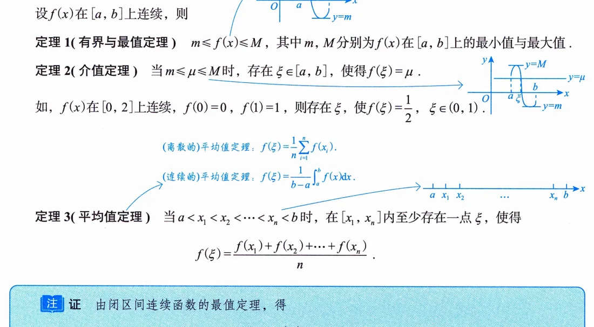
定理6.4 零点定理及其推广
\(f(x)\) 在 \([a,b]\) 上连续且 \(f(a)\cdot f(b)<0\)，则存在 \(\xi\in(a,b)\) 使 \(f(\xi)=0\)。推广版做题更好用：若 \(f(x)\) 在 \((a,b)\) 内连续，\(\lim\limits_{x\to a^+}f(x)=\alpha\)，\(\lim\limits_{x\to b^-}f(x)=\beta\)，且 \(\alpha\cdot\beta<0\)，则 \(f(x)=0\) 在 \((a,b)\) 内至少有一个根，其中 \(a,b,\alpha,\beta\) 可以是有限数也可以是无穷大（印P213）。推广版专门对付端点无定义或无穷区间：如 \(\lim\limits_{x\to a^+}f(x)=-\infty,\ \lim\limits_{x\to b^-}f(x)=+\infty\) 的情形（例6.1 用取点法走了一遍），实系数奇次方程至少有一实根也是它的推论（印P223）。
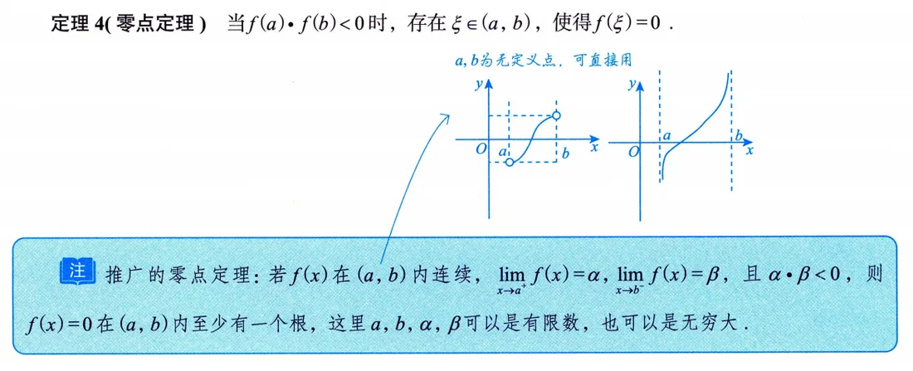
定理6.5 费马定理
设 \(f(x)\) 在 \(x_0\) 处可导，且在 \(x_0\) 处取得极值，则 \(f'(x_0)=0\)。证明用极值定义配合极限保号性：不妨设 \(f(x)\leqslant f(x_0)\)，则 \(x<x_0\) 时 \(\frac{f(x)-f(x_0)}{x-x_0}\geqslant 0\)，取极限得 \(f'_-(x_0)\geqslant 0\)；\(x>x_0\) 时同法得 \(f'_+(x_0)\leqslant 0\)；可导则左右导数相等，只能都是 0（印P214）。原书配了两个反例说明两个条件缺一不可：\(f(x)=|x|\) 在 \(x=0\) 取极小但不可导；\(f(x)=x^3\) 在 \(x=0\) 可导且 \(f'(0)=0\) 但不是极值点——所以费马定理只是极值的必要条件（印P215）。使 \(f'(x)=0\) 的点叫驻点（稳定点、逗留点）。费马是罗尔定理的引擎：罗尔证明里那个 \(\xi\) 就是靠"闭区间连续必有最值 + 最值点若在内部则由费马得导数为零"拿到的。
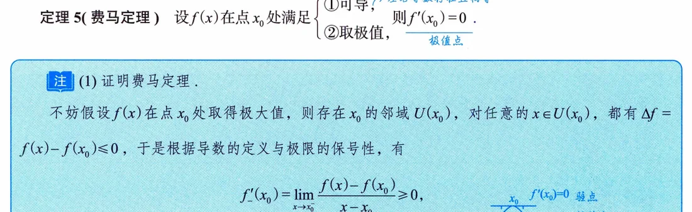
定理6.6 罗尔定理及其推广
三条件缺一不可：①\(f(x)\) 在 \([a,b]\) 上连续；②在 \((a,b)\) 内可导；③\(f(a)=f(b)\)，则存在 \(\xi\in(a,b)\) 使 \(f'(\xi)=0\)。几何直观：两端等高的连续可导曲线中间必有一处水平切线。证明思路：由最值定理，\(f\) 在 \([a,b]\) 上取得最大最小值；若 \(m=M\) 则 \(f\) 为常数，任一点都行；若 \(m<M\)，则 \(m,M\) 至少一个在内部取得（因为端点等值），设 \(x_0\) 为内部最值点，费马定理给出 \(f'(x_0)=0\)。
推广的罗尔定理把"端点等值"放宽为"端点极限相等"：设 \(f(x)\) 在 \((a,b)\) 内可导，且 \(\lim\limits_{x\to a^+}f(x)=\lim\limits_{x\to b^-}f(x)=A\)，则存在 \(\xi\in(a,b)\) 使 \(f'(\xi)=0\)，其中 \((a,b)\) 可以是无穷区间，\(A\) 可以是有限数也可以是无穷大（印P215）。无穷区间上的等值问题（两端都趋于同一个极限）用它，不用再费劲找两点。
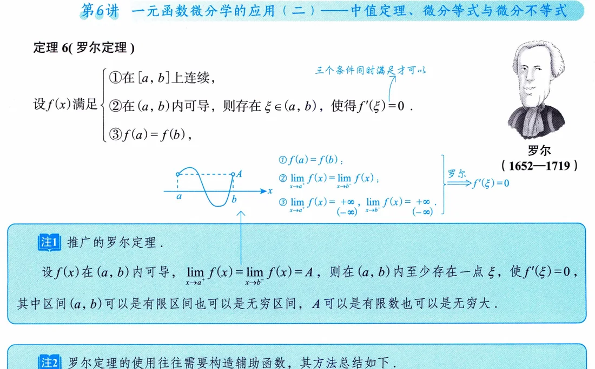
辅助函数构造表：求导公式的逆用
用罗尔定理的关键是构造辅助函数，本质是求导公式的逆用——把要证等式看成某个函数导数的分子（印P215）。乘积公式逆用一族（印P215）：
- \([f(x)g(x)]'=f'(x)g(x)+f(x)g'(x)\)：见 \(f'g+fg'\) 令 \(F=f\cdot g\)；
- \([f^2(x)]'=2f(x)f'(x)\)：见 \(f(x)f'(x)\) 令 \(F=f^2\)；
- \([f(x)f'(x)]'=[f'(x)]^2+f(x)f''(x)\)：见 \([f']^2+ff''\) 令 \(F=ff'\)；
- \([f(x)\mathrm{e}^{\lambda x}]'=\mathrm{e}^{\lambda x}[f'(x)+\lambda f(x)]\)：见 \(f'+\lambda f\) 令 \(F=f\mathrm{e}^{\lambda x}\)；
- \([f(x)\mathrm{e}^{-F(x)}]'=\mathrm{e}^{-F(x)}[f'(x)-F'(x)f(x)]\)：见 \(f'-F'f\) 令 \(F=f\mathrm{e}^{-F(x)}\)。
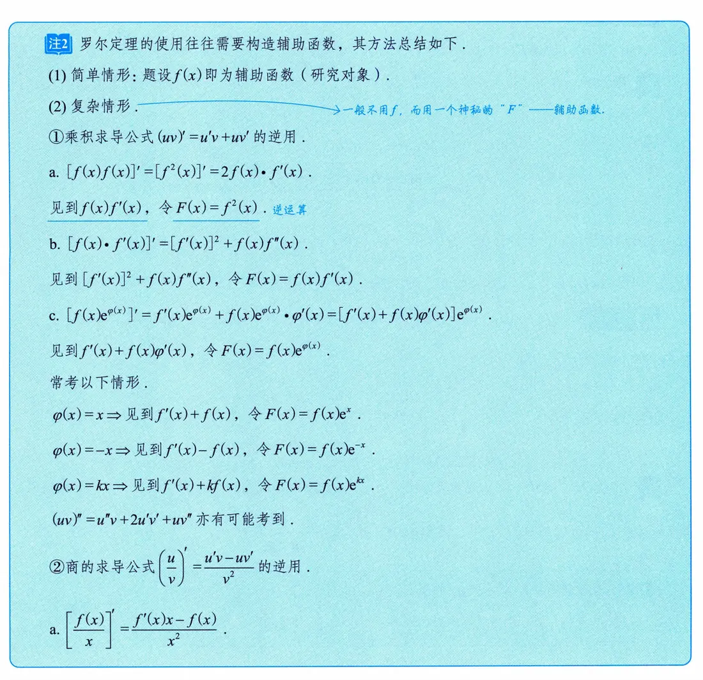
商公式逆用一族（印P216）：
- \(\left[\dfrac{f(x)}{g(x)}\right]'=\dfrac{f'(x)g(x)-f(x)g'(x)}{g^2(x)}\)：见 \(xf'(x)-f(x)\)（取 \(g=x\)）令 \(F=\dfrac{f(x)}{x}\)；
- \(\left[\dfrac{f'(x)}{f(x)}\right]'=\dfrac{f(x)f''(x)-[f'(x)]^2}{f^2(x)}\)：见 \(ff''-[f']^2\) 令 \(F=\dfrac{f'(x)}{f(x)}\)（或 \(\ln f(x)\)）。
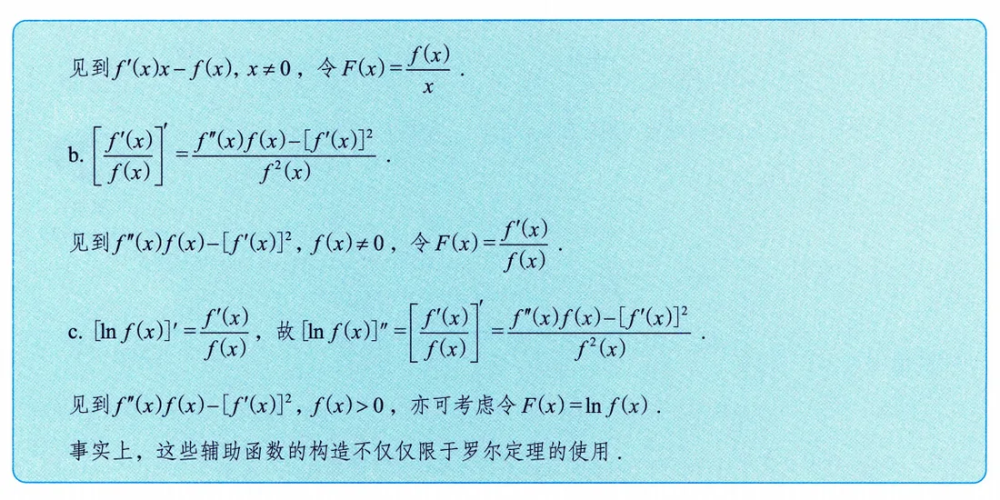
这张表是全讲最值得背的东西之一。通用的兜底法：要证 \(f'(\xi)+\varphi'(\xi)f(\xi)=0\) 型等式，令 \(F(x)=f(x)\mathrm{e}^{\int\varphi(x)\mathrm{d}x}\)，必有 \(F'=\mathrm{e}^{\int\varphi\mathrm{d}x}[f'+\varphi'f]\)——例6.5 就是这么算出来的。
定理6.7 拉格朗日中值定理
\(f(x)\) 在 \([a,b]\) 上连续、\((a,b)\) 内可导，则存在 \(\xi\in(a,b)\) 使
\[ f(b)-f(a)=f'(\xi)(b-a),\qquad\text{或}\qquad f'(\xi)=\frac{f(b)-f(a)}{b-a}. \]
几何直观：连接 \((a,f(a))\)、\((b,f(b))\) 的弦，曲线中间必有一处切线与弦平行；弦水平时它就退化为罗尔。原书注：题里见到 \(f(a)-f(b)\)、或者要建立 \(f\) 与 \(f'\) 的关系，一般想到它；它的作用是用导函数的值控制函数值的增减（印P218）——习题6.5（\(|\sin x_2-\sin x_1|\leqslant|x_2-x_1|\)）、例6.8、例6.9 都是这句话的注脚。证明思路：作 \(F(x)=f(x)-\left[f(0)？\right]\)——标准做法是令弦方程 \(y=\frac{f(b)-f(a)}{b-a}(x-a)+f(a)\)，作差函数 \(F(x)=f(x)-y\)，验证 \(F(a)=F(b)=0\) 后用罗尔。
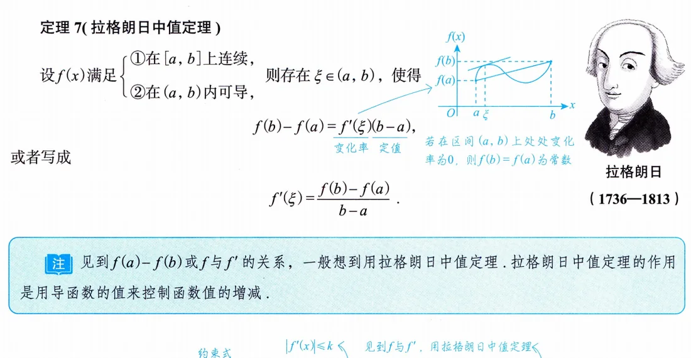
定理6.8 柯西中值定理
设 \(f(x),g(x)\) 满足①在 \([a,b]\) 上连续；②在 \((a,b)\) 内可导；③\(g'(x)\neq 0\)，则存在 \(\xi\in(a,b)\) 使
\[ \frac{f(b)-f(a)}{g(b)-g(a)}=\frac{f'(\xi)}{g'(\xi)}. \]
它的来历是参数方程 \(\begin{cases}x=g(t)\\y=f(t)\end{cases}\) 视角下的拉格朗日：曲线两端连线，中间必有一处切线平行于连线，算出来就是上式，所以分子分母是同一个 \(\xi\)。\(g'(x)\neq 0\) 保证分母 \(g(b)-g(a)\neq 0\)（否则若 \(g(b)=g(a)\)，由罗尔会有 \(g'(\eta)=0\) 矛盾）。绝不能把它拆成两个拉格朗日相除——两个定理给的 \(\xi\) 未必是同一个点（印P219）。常考"一个具体函数 + 一个抽象函数"的搭配，套路是"分母想凑什么就配什么"：结论里分母出现 \(\ln b-\ln a\) 就配 \(g(x)=\ln x\)（例6.11）。
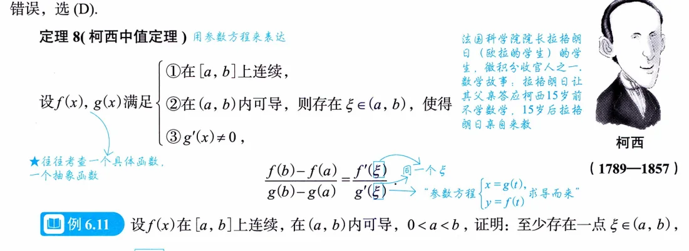
定理6.9 泰勒公式
带拉格朗日余项的 \(n\) 阶泰勒公式：设 \(f(x)\) 在包含 \(x_0\) 的区间内 \(n+1\) 阶可导，则对该区间内任意 \(x\),
\[ f(x)=f(x_0)+f'(x_0)(x-x_0)+\frac{f''(x_0)}{2!}(x-x_0)^2+\cdots+\frac{f^{(n)}(x_0)}{n!}(x-x_0)^n+\frac{f^{(n+1)}(\xi)}{(n+1)!}(x-x_0)^{n+1}, \]
其中 \(\xi\) 介于 \(x\) 与 \(x_0\) 之间。它适用于区间上的任意点，常在证明题中使用——证不等式、证中值等式（印P220）。带佩亚诺余项的版本只要求 \(f\) 在 \(x_0\) 处 \(n\) 阶可导，余项写成 \(o((x-x_0)^n)\)，仅适用于 \(x=x_0\) 及其邻域，用于求极限、定无穷小的阶、判极值（印P220）。一句话记：拉格朗日余项管区间，佩亚诺余项管邻域。什么时候想到泰勒：条件或结论里出现\(f\) 与 \(f'',f'''\) 的关系（隔着阶），拉格朗日够不着时就上泰勒——原书给的判断是：证 \(f^{(n)}(\xi)=0\) 罗尔可能性大，证 \(f^{(n)}(\xi)\neq 0\)（不等式）泰勒可能性大（印P217）。
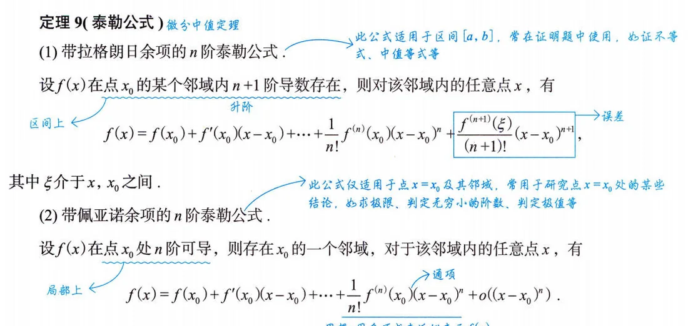
麦克劳林公式与七个常用展开式
\(x_0=0\) 时的泰勒公式叫麦克劳林公式。下面七个展开式必须背熟（印P220）：
\[ \mathrm{e}^x=1+x+\frac{x^2}{2!}+\cdots+\frac{x^n}{n!}+o(x^n),\qquad \sin x=x-\frac{x^3}{3!}+\frac{x^5}{5!}-\cdots, \]
\[ \cos x=1-\frac{x^2}{2!}+\frac{x^4}{4!}-\cdots,\qquad \frac{1}{1-x}=1+x+x^2+\cdots, \]
\[ \frac{1}{1+x}=1-x+x^2-\cdots,\qquad \ln(1+x)=x-\frac{x^2}{2}+\frac{x^3}{3}-\cdots,\qquad (1+x)^\alpha=1+\alpha x+\frac{\alpha(\alpha-1)}{2}x^2+\cdots. \]
前五个是后两个的特例口径也可以这么记：它们在第1讲求极限时就反复出场，本讲是把它们带拉格朗日余项拿到区间上用。证明题里真正难的不是展开本身，而是选点：展开点 \(x_0\) 取"已知导数值的点或待证导数值的点"，被展开点 \(x\) 取"已知函数值的点或特殊点（端点、中间点）"，代入后设法消去未知的函数项或导数项，向结论靠拢（印P222，例6.13 后的注）。
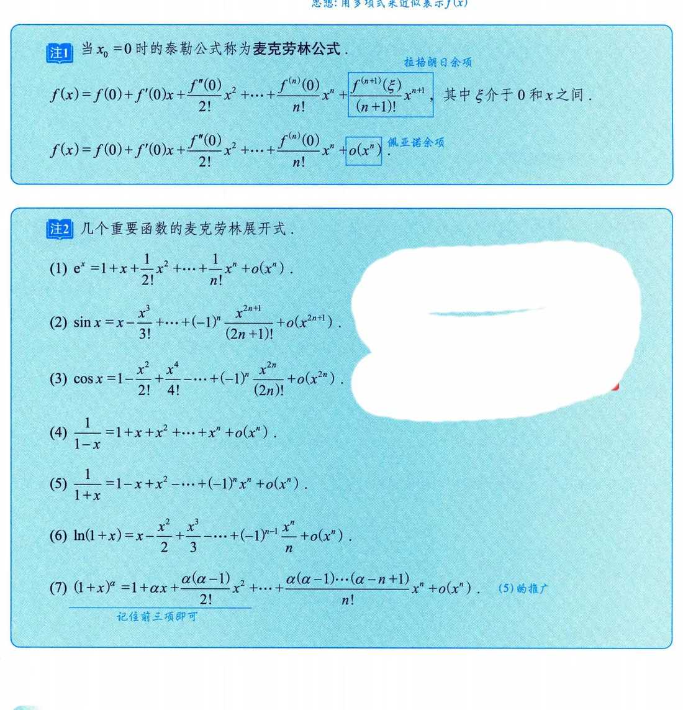
微分等式：方程根的存在性与个数
见到方程 \(f(x)=0\)，就是讨论其根的问题（存在性与个数，印P223）。存在性用三条：零点定理（含推广）、罗尔定理及其推论、实系数奇次方程至少有一个实根（证明：奇次多项式首项系数定号时 \(\lim\limits_{x\to+\infty}f\) 与 \(\lim\limits_{x\to-\infty}f\) 异号，用推广零点定理）。个数（上界）用两条：单调性——\(f\) 在区间上单调则 \(f(x)=0\) 至多一根；罗尔原话（见下一条）。方程的根、函数的零点、曲线的交点是同一个问题的三张皮：讨论 \(\varphi(x)=\psi(x)\) 的解个数，就令 \(f=\varphi-\psi\) 研究零点。
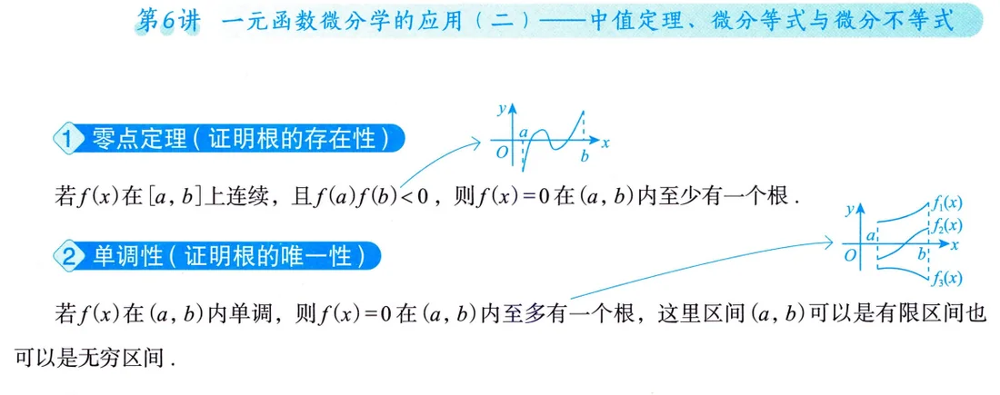
罗尔定理的推论（罗尔原话）
若 \(f^{(n)}(x)=0\) 至多有 \(k\) 个根，则 \(f(x)=0\) 至多有 \(k+n\) 个根（印P223）。道理就是把罗尔用 \(n\) 遍：\(f(x)=0\) 有 \(k+n\) 个根 \(\Rightarrow f'(x)=0\) 至少 \(k+n-1\) 个根 \(\Rightarrow\cdots\Rightarrow f^{(n)}(x)=0\) 至少 \(k\) 个根。常用特例：\(f'(x)\neq 0\) 恒成立，则 \(f(x)=0\) 至多一个根。做题方向是反着用：导数方程的根数不好数，就求导到某一阶让它无根，再"以阶数换个数"退回来——例6.16 里 \(f'''(x)=2^x\ln^3 2\neq 0\) 无根，立刻得 \(f(x)=0\) 至多 3 个根。张宇把这条列为本讲重难点第二条。
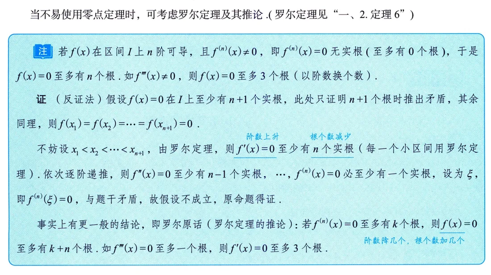
微分不等式：用函数性态证明
三条证明路径里首选函数性态：先研究辅助函数 \(F(x)\) 的单调性、凹凸性、最值、正负。四条常用依据要背（印P226）：
- \(f(x)\) 在 \([a,b]\) 上单调增加，则 \(f(a)\leqslant f(x)\leqslant f(b)\)；单调减少则反过来；
- 若 \(f''(x)\geqslant 0\)，说明 \(f'(x)\) 单调增加，\(f'(a)\leqslant f'(x)\leqslant f'(b)\)；当 \(f'(a)>0\) 时 \(f\) 在 \([a,b]\) 上单调增加，当 \(f'(b)<0\) 时单调减少；
- 若 \(f(x)\) 在 \([a,b]\) 上连续且在 \((a,b)\) 内只有一个极值点 \(x_0\)（唯一极值原理），则 \(x_0\) 为极大值点时 \(f(x_0)\geqslant f(x)\)（极大即最大），极小同理（极小即最小）；
- 若 \(f''(x)>0\)（凹弧）且 \(f(a)=f(b)=0\)，则在 \((a,b)\) 内 \(f(x)<0\)；反之 \(f''(x)<0\)（凸弧）时 \(f(x)>0\)——习题6.9 正用此条。
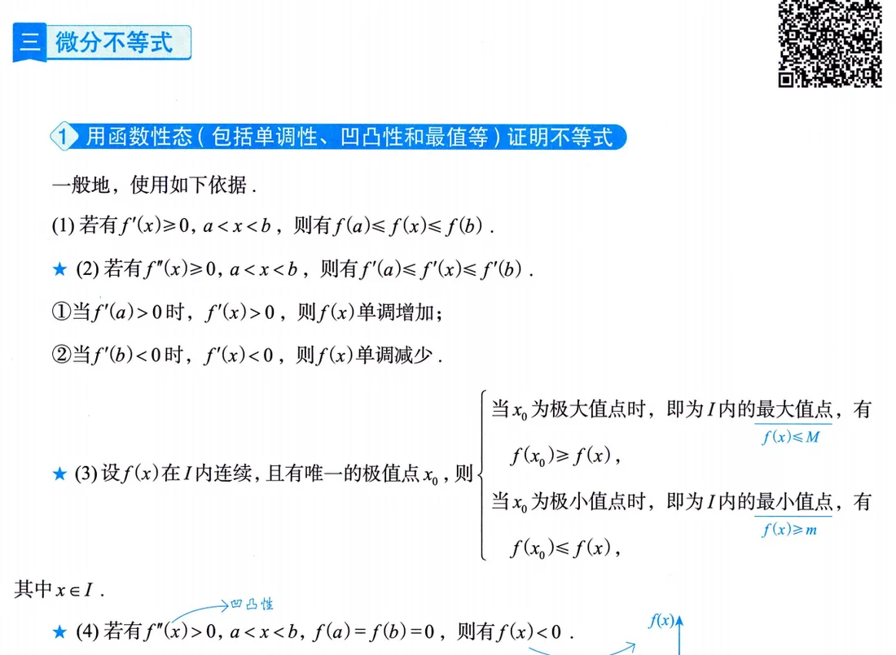
微分不等式：常数变量化与中值定理
常数变量化：如果欲证的不等式中（除 \(x\) 外）都是常数，常数不可直接求导，就把其中一个或几个常数变量化（换成 \(x\)），再用函数性态那套工具（印P228）。例6.21 右半边就是把 \(\ln x-\ln a<\frac{x-a}{\sqrt{ax}}\) 里的 \(b\) 换成变量 \(x\) 来证的。
用中值定理证明：主要用拉格朗日或泰勒，依据是中值 \(\xi\) 满足 \(a<\xi<b\)、\(f(a)<f(\xi)<f(b)\)。原书旁注点得很透（大意）：用中值定理证不等式，形式上是把 \(b\) 换成了 \(\xi\)，而 \(\xi\) 落在 \((a,b)\) 内，所以本质上依然是用函数性态（单调性）证不等式，所差的不过是一点放缩功夫（印P228）。典型手法：把中间量写成 \(\frac{f(b)-f(a)}{b-a}=f'(\xi)\)，再用 \(a<\xi<b\) 两头放缩（例6.21 左半边）。
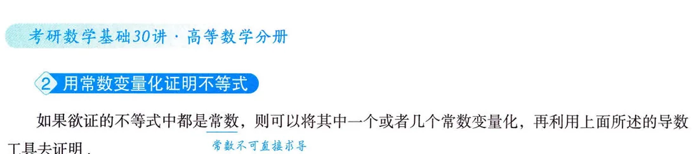
典型例题精讲
本讲例题按原书编号收全（原书自例6.2 之后直接接例6.4，没有例6.3，印P213–228）。每题先自己动笔再对答案。
例6.1 零点定理工兵题（印P213）
设 \(f(x)\) 在 \([0,1]\) 上连续，且 \(f(1)=0,\ f(\tfrac{1}{2})=1\)，证明：存在 \(\xi\in(\tfrac{1}{2},1)\)，使 \(f(\xi)=\xi\)。
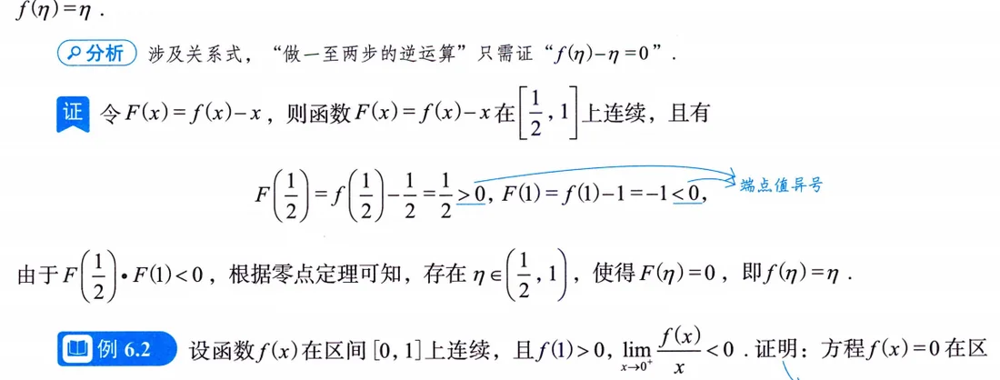
思路 结论是 \(f(\xi)=\xi\)，即 \(f(x)-x\) 的零点，移项造辅助函数后端点值异号，一步零点定理。
要点 令 \(F(x)=f(x)-x\)，则 \(F(x)\) 在 \([\tfrac{1}{2},1]\) 上连续，且
\[ F\!\left(\tfrac{1}{2}\right)=1-\tfrac{1}{2}=\tfrac{1}{2}>0,\qquad F(1)=0-1=-1<0, \]
由零点定理，存在 \(\xi\in(\tfrac{1}{2},1)\subset(0,1)\) 使 \(F(\xi)=0\)，即 \(f(\xi)=\xi\)。这类"证存在一点使 \(f(\xi)=g(\xi)\)"的题，永远是令 \(F=f-g\) 找异号端点。
例6.2 保号性接零点定理（印P213）
设 \(f(x)\) 在 \([0,1]\) 上连续，\(f(1)>0\)，且 \(\lim\limits_{x\to 0^+}\dfrac{f(x)}{x}<0\)，证明：\(f(x)=0\) 在 \((0,1)\) 内至少有一个实根。
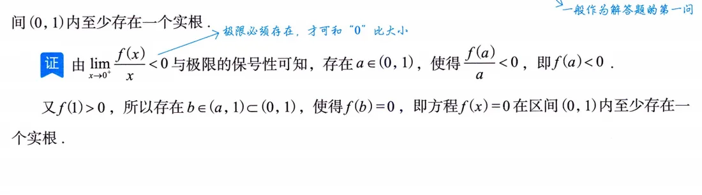
思路 条件是"某点极限值为负"，函数值异号的端点还没直接给出——用极限的局部保号性先把负值点挖出来，再走零点定理。
要点 由 \(\lim\limits_{x\to 0^+}\frac{f(x)}{x}<0\) 及保号性，存在 \(a\in(0,1)\)，使得 \(f(a)<0\)；又 \(f(1)>0\)，故 \(f(a)\cdot f(1)<0\)，由零点定理，存在 \(\xi\in(a,1)\subset(0,1)\) 使 \(f(\xi)=0\)。这个"保号性找点 + 零点定理"的组合在大题里几乎固定作为第一问出现（原书旁注也这么提示），例6.7 第②步用的就是它。
例6.4 平均值定理 + 罗尔（印P216）
设 \(f(x)\) 在 \([0,3]\) 上连续，在 \((0,3)\) 内可导，且 \(f(0)+f(1)+f(2)=3,\ f(3)=1\)，证明：存在 \(\xi\in(0,3)\) 使 \(f'(\xi)=0\)。
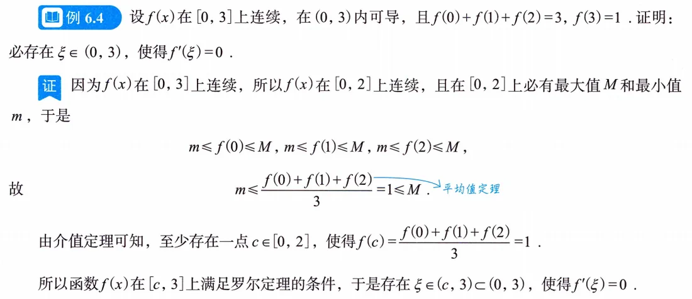
思路 三点函数值的算术平均恰好等于 \(f(3)\)：先用最值定理 + 介值定理（即平均值定理）造出第二个等值点，再闭区间用罗尔。
要点 ①\(f\) 在 \([0,2]\) 上连续，有最值 \(m,M\)：\(m\leqslant f(0),f(1),f(2)\leqslant M\)，三个不等式相加除以 3 得 \(m\leqslant\frac{f(0)+f(1)+f(2)}{3}=1\leqslant M\)；②由介值定理存在 \(c\in[0,2]\) 使 \(f(c)=1\)；③\(f(c)=f(3)=1\)，在 \([c,3]\) 上用罗尔定理，存在 \(\xi\in(c,3)\subset(0,3)\) 使 \(f'(\xi)=0\)。
例6.5 构造 \(f(x)(b-x)^a\)（印P216）
设 \(a>0\)，\(f(x)\) 在 \([a,b]\) 上连续，在 \((a,b)\) 内可导，且 \(f(a)=0\)，证明：存在 \(\xi\in(a,b)\) 使 \(f'(\xi)=\dfrac{a}{b-\xi}f(\xi)\)。
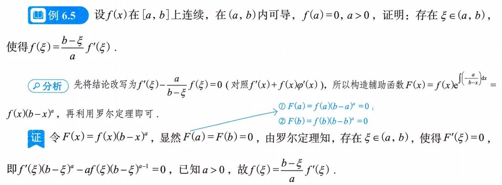
思路 结论改写为 \(f'(\xi)-\dfrac{a}{b-\xi}f(\xi)=0\)，对照乘积逆用表里 \(f'-F'f\) 的形式，辅助函数取 \(F(x)=f(x)\,\mathrm{e}^{\int(-\frac{a}{b-x})\mathrm{d}x}=f(x)(b-x)^a\)。
要点 ①令 \(F(x)=f(x)(b-x)^a\)，它在 \([a,b]\) 上连续、\((a,b)\) 内可导，且 \(F(a)=f(a)(b-a)^a=0\)，\(F(b)=f(b)\cdot 0=0\)；②罗尔定理得存在 \(\xi\in(a,b)\) 使 \(F'(\xi)=0\)，即
\[ f'(\xi)(b-\xi)^a-af(\xi)(b-\xi)^{a-1}=0; \]
③由 \(a>0\)、\(\xi\in(a,b)\) 知 \((b-\xi)^{a-1}\neq 0\)，约去后整理得 \(f'(\xi)=\dfrac{a}{b-\xi}f(\xi)\)。
例6.6 三点共线，两次罗尔（印P217）
设 \(f(x)\) 在 \([0,1]\) 上连续，在 \((0,1)\) 内二阶可导，过点 \(A(0,f(0))\)、\(B(1,f(1))\) 的直线与曲线 \(y=f(x)\) 相交于点 \(C(c,f(c))\)（\(0<c<1\)），证明：存在 \(\xi\in(0,1)\) 使 \(f''(\xi)=0\)。
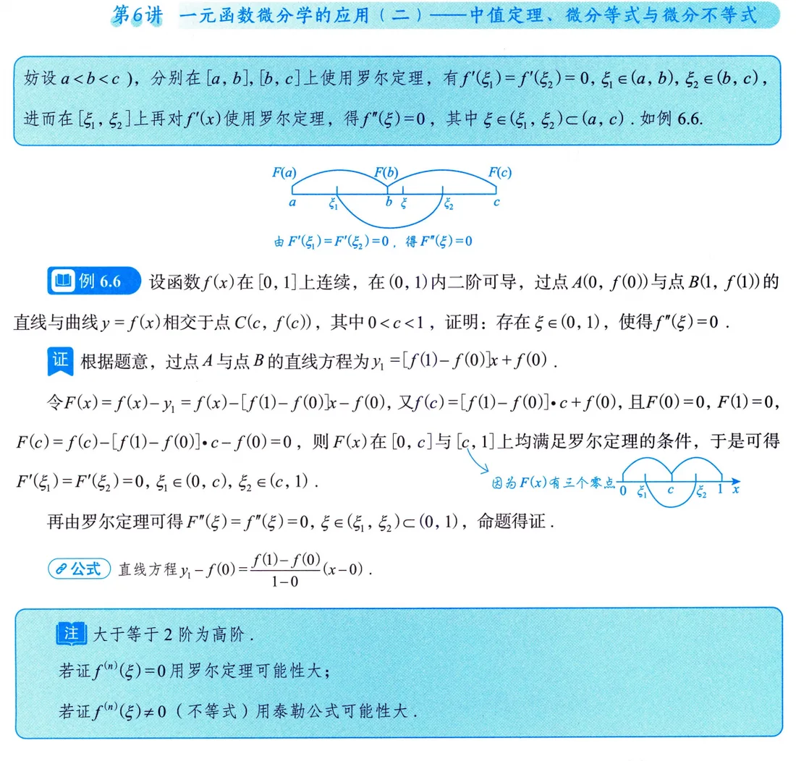
思路 "直线与曲线有交点"翻译成函数语言：曲线减去直线得三个零点 \(0,c,1\)。三个零点用两次罗尔，必然逼出一个二阶导零点。
要点 ①过 \(A,B\) 的直线为 \(y_1=[f(1)-f(0)]x+f(0)\)，令 \(F(x)=f(x)-y_1(x)\)，则 \(F(0)=F(c)=F(1)=0\)；②在 \([0,c]\)、\([c,1]\) 上分别用罗尔定理，得 \(\xi_1\in(0,c),\xi_2\in(c,1)\) 使 \(F'(\xi_1)=F'(\xi_2)=0\)，即 \(f'(\xi_1)=f'(\xi_2)=f(1)-f(0)\)；③再对 \(f'(x)\) 在 \([\xi_1,\xi_2]\) 上用罗尔定理，得 \(\xi\in(\xi_1,\xi_2)\subset(0,1)\) 使 \(f''(\xi)=0\)。多次罗尔的心法：要证 \(f''(\xi)=0\)，就想办法找 \(f'\) 的两个等值点，而 \(f'\) 的等值点通常来自 \(f\) 的三个零点（印P217）。
注 原书在这一段后给了方向性判断（印P217）：证 \(f^{(n)}(\xi)=0\) 用罗尔定理可能性大；证 \(f^{(n)}(\xi)\neq 0\)（即不等式）用泰勒公式可能性大。
例6.7 \(F=ff'\) 三零点两段罗尔（印P217）
设 \(f(x)\) 在 \([0,1]\) 上连续，在 \((0,1)\) 内二阶可导，\(f(1)=1\)，且 \(\lim\limits_{x\to 0^+}\dfrac{f(x)}{x}=-1\)，证明：方程 \(f(x)f''(x)+[f'(x)]^2=0\) 在 \((0,1)\) 内至少有两个不同实根。
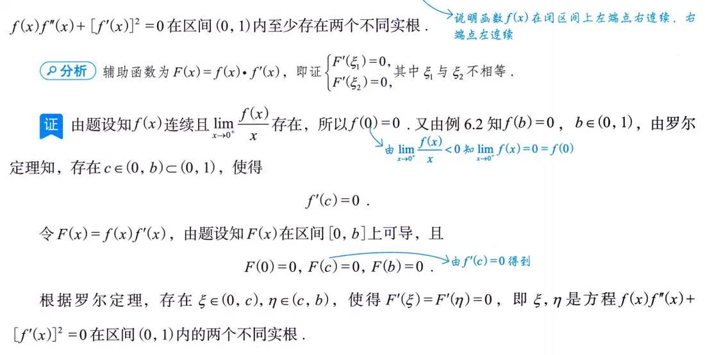
思路 注意 \(f(x)f''(x)+[f'(x)]^2=[f(x)f'(x)]'\)，这就是构造表第三行的逆用。要 \(F'=f f''+(f')^2\) 有两个零点，需要 \(F=ff'\) 有三个零点；零点从哪来——例6.2 的保号性套路 + 罗尔。
要点 ①极限 \(\lim\limits_{x\to 0^+}\frac{f(x)}{x}=-1\) 存在（有限）且 \(f\) 在 0 处连续，若 \(f(0)\neq 0\) 则比值趋于无穷，矛盾，故 \(f(0)=0\)；②由极限为负及保号性，存在 \(a\in(0,1)\) 使 \(f(a)<0\)，又 \(f(1)=1>0\)，零点定理得存在 \(b\in(a,1)\) 使 \(f(b)=0\)；③\(f(0)=f(b)=0\)，罗尔得 \(c\in(0,b)\) 使 \(f'(c)=0\)；④令 \(F(x)=f(x)f'(x)\)，则 \(F(0)=f(0)f'(0)=0\)，\(F(c)=f(c)f'(c)=0\)，\(F(b)=f(b)f'(b)=0\)；在 \([0,c]\)、\([c,b]\) 上各用一次罗尔定理，得 \(\xi\in(0,c),\ \eta\in(c,b)\) 使 \(F'(\xi)=F'(\eta)=0\)，即原方程在 \((0,1)\) 内至少有两个不同实根。
例6.8 \(f'\) 有界 \(\Rightarrow\) \(f\) 有界（印P218）
设 \(f(x)\) 在 \((a,b)\) 内可导，且 \(f'(x)\) 在 \((a,b)\) 内有界，证明：\(f(x)\) 在 \((a,b)\) 内有界。
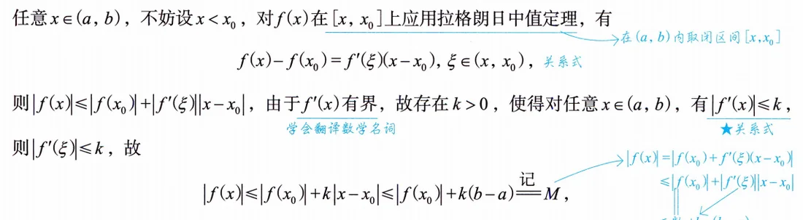
思路 条件给 \(f'\)、结论给 \(f\)，正是"用导函数的值控制函数值"的拉格朗日场景。开区间上没有端点，先固定一个基准点。
要点 设 \(|f'(x)|\leqslant M\)。取定 \(x_0\in(a,b)\)，对任意 \(x\in(a,b)\)（不妨 \(x>x_0\)），\(f\) 在 \([x_0,x]\) 上连续、\((x_0,x)\) 内可导，由拉格朗日中值定理
\[ |f(x)-f(x_0)|=|f'(\xi)|\,|x-x_0|\leqslant M(b-a), \]
故 \(|f(x)|\leqslant|f(x_0)|+M(b-a)\)，即 \(f\) 在 \((a,b)\) 内有界。原书注：由 \(f\) 在开区间内可导，只能保证它在含于 \((a,b)\) 的任意闭区间上连续，所以不能直接对 \([a,b]\) 用定理，固定内点再估计是关键动作。
例6.9 反证法：\(f\) 无界 \(\Rightarrow\) \(f'\) 无界（印P218）
设 \(f(x)\) 在 \((a,b)\) 内可导，证明：若 \(f(x)\) 在 \((a,b)\) 内无界，则 \(f'(x)\) 在 \((a,b)\) 内也无界。
思路 这是例6.8 的逆否命题（原书把它们排成一对）。反证：假设 \(f'\) 有界，则例6.8 的结论直接给出 \(f\) 有界，矛盾。自己写时也可以不引例6.8，把上题的固定基点估计原样走一遍：
要点 反证，若存在 \(M>0\) 使 \(|f'(x)|\leqslant M\) 对一切 \(x\in(a,b)\) 成立，取定 \(x_0\in(a,b)\)，对任意 \(x\in(a,b)\) 由拉格朗日中值定理 \(|f(x)-f(x_0)|=|f'(\xi)||x-x_0|\leqslant M(b-a)\)，于是 \(|f(x)|\leqslant|f(x_0)|+M(b-a)\)，\(f\) 有界，与已知矛盾。故 \(f'\) 无界。
例6.10 选择题：\(xf(x)\) 与 \(f(x)/x\) 的单调性（印P218–219）
设 \(f(x)\) 在 \([0,+\infty)\) 上具有二阶导数，\(f(0)=0\)，且 \(f'(x)<0,\ f''(x)>0\)，则对于 \(0<a<x<b\)，下列不等式成立的是（ ）。(A) \(xf(x)>af(a)\) (B) \(bf(b)>xf(x)\) (C) \(xf(a)>af(x)\) (D) \(xf(b)>bf(x)\)
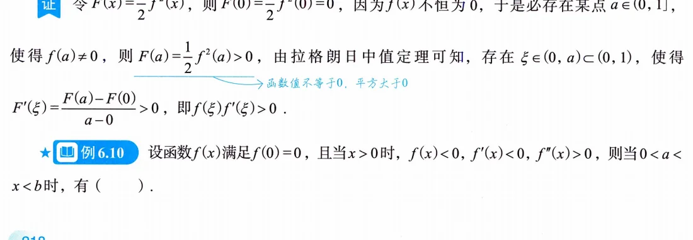
思路 选项里 \(xf(x)\) 和 \(f(x)\)/\(x\)（交叉相乘即比值的变形）两族结构，分别令 \(g(x)=xf(x)\)、\(h(x)=f(x)/x\) 研究单调性。注意 \(f(0)=0\) 与 \(f'(x)<0\) 推出 \(f(x)<0\)。
要点 ①令 \(g(x)=xf(x)\)，则 \(g'(x)=f(x)+xf'(x)=\text{负}+\text{负}<0\)，\(g\) 单调减少，故 \(g(b)<g(x)<g(a)\)，即 \(bf(b)<xf(x)<af(a)\)，(A)(B) 都错；②令 \(h(x)=\dfrac{f(x)}{x}\)，则 \(h'(x)=\dfrac{xf'(x)-f(x)}{x^2}\)，分子是"负减负"定不了号——原书旁注正是在这里说：判断不出 \(f\) 与 \(xf'\) 的大小关系时，想到拉格朗日中值定理；③由 \(f(0)=0\) 得 \(f(x)=f(x)-f(0)=f'(\xi)x\)，其中 \(0<\xi<x\)；又 \(f''(x)>0\) 说明 \(f'(x)\) 单调增加，故 \(f'(\xi)<f'(x)\)，于是
\[ xf'(x)-f(x)=xf'(x)-xf'(\xi)=x[f'(x)-f'(\xi)]>0, \]
所以 \(h'(x)>0\)，\(h\) 单调增加，\(h(a)<h(x)<h(b)\)，交叉相乘得 \(xf(b)>bf(x)\)（同时 \(af(x)>xf(a)\)，(C) 反了），应选 (D)。这道题把"构造积/商 + 拉格朗日补刀"两招串在一起，值得反复做。
例6.11 柯西配 \(\ln x\)（印P219）
设 \(0<a<b\)，\(f(x)\) 在 \([a,b]\) 上连续，在 \((a,b)\) 内可导，证明：存在 \(\xi\in(a,b)\) 使 \(f(b)-f(a)=\xi\ln\dfrac{b}{a}\,f'(\xi)\)。
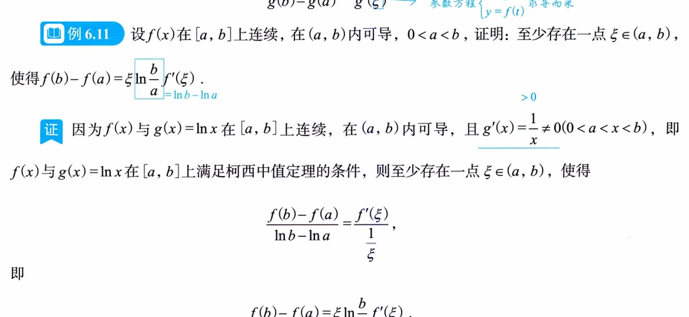
思路 要证的式子整理成 \(\dfrac{f(b)-f(a)}{\ln b-\ln a}=\dfrac{f'(\xi)}{1/\xi}\)，分母里出现 \(\ln b-\ln a\)，就配 \(g(x)=\ln x\) 用柯西。
要点 \(f(x)\) 与 \(g(x)=\ln x\) 在 \([a,b]\) 上连续、\((a,b)\) 内可导，且 \(g'(x)=\dfrac{1}{x}\neq 0\)（\(0<a<b\)），满足柯西中值定理全部条件，故存在 \(\xi\in(a,b)\) 使
\[ \frac{f(b)-f(a)}{\ln b-\ln a}=\frac{f'(\xi)}{1/\xi}, \]
整理即 \(f(b)-f(a)=\xi\ln\dfrac{b}{a}f'(\xi)\)。柯西的套路一句话：分母想凑什么就配什么（要 \(\ln b-\ln a\) 就配 \(\ln x\)，要 \(b^2-a^2\) 就配 \(x^2\)）。
例6.12 泰勒在 mid 点展开 + 积分（印P221–222）
设 \(f(x)\) 在 \([0,1]\) 上二阶可导，且 \(\int_0^1 f(x)\mathrm{d}x=0\)，则（ ）。(A) 当 \(f'(x)<0\) 时，\(f(\tfrac{1}{2})<0\) (B) 当 \(f''(x)<0\) 时，\(f(\tfrac{1}{2})<0\) (C) 当 \(f'(x)>0\) 时，\(f(\tfrac{1}{2})<0\) (D) 当 \(f''(x)>0\) 时，\(f(\tfrac{1}{2})<0\)
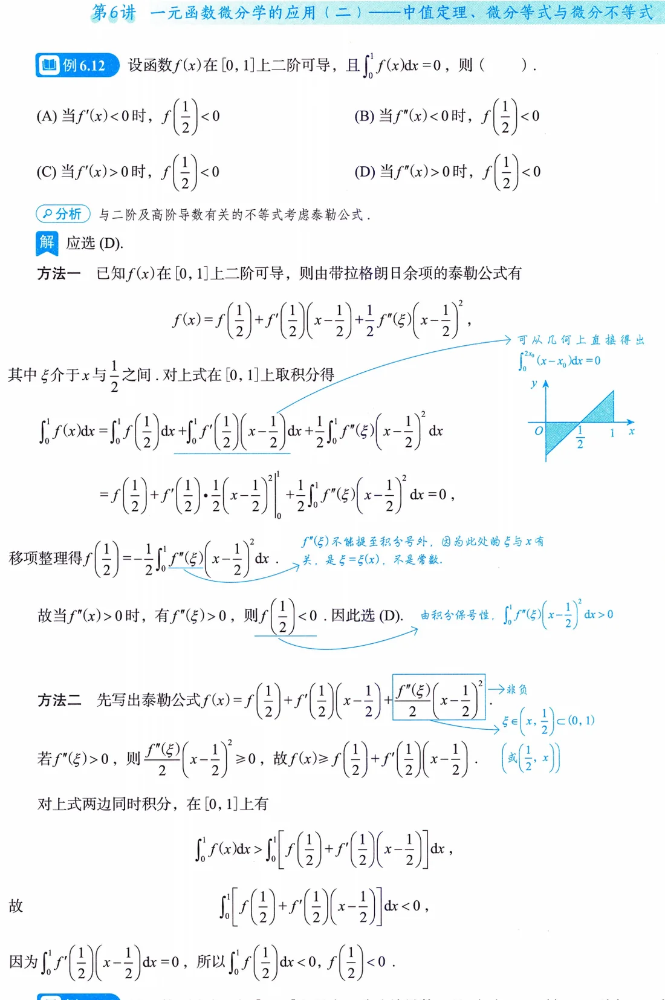
思路 条件是积分（全区间信息），选项是中点函数值与二阶导符号的关系—— \(f\) 与 \(f''\) 隔着一阶，上泰勒；展开点取中点 \(x_0=\tfrac{1}{2}\)（待比较的点），两边从 0 到 1 积分，利用 \(\int_0^1(x-\tfrac12)\mathrm{d}x=0\) 消掉一阶项。
要点 ①在 \(x=\tfrac{1}{2}\) 处展开：
\[ f(x)=f\!\left(\tfrac12\right)+f'\!\left(\tfrac12\right)\left(x-\tfrac12\right)+\frac{f''(\xi)}{2}\left(x-\tfrac12\right)^2,\qquad \xi \text{ 介于 } x \text{ 与 } \tfrac12 \text{ 之间}; \]
②两边从 0 到 1 积分，左端为 0，且 \(\int_0^1(x-\tfrac12)\mathrm{d}x=0\)，得
\[ 0=f\!\left(\tfrac12\right)+\frac12\int_0^1 f''(\xi)\left(x-\tfrac12\right)^2\mathrm{d}x; \]
③当 \(f''(x)>0\) 时被积函数除 \(x=\tfrac12\) 外处处为正，积分为正，故 \(f(\tfrac12)<0\)，应选 (D)。
注（易错） 第二步不能把 \(f''(\xi)\) 当常数提到积分号外——这里的 \(\xi=\xi(x)\) 与 \(x\) 有关（印P221–222）。原书的方法二与此同理：把①式移项得 \(f(\tfrac12)=0-\frac12\int_0^1 f''(\xi)\left(x-\tfrac12\right)^2\mathrm{d}x\)，当 \(f''(x)>0\) 时积分为正，故 \(f(\tfrac12)<0\)。凹函数（\(f''>0\)）的图像在任一切线上方，中点函数值被"平均"压住，选 (D) 与几何直觉一致。
例6.13 泰勒双端点展开 + 介值定理（印P221–222）
设 \(f(x)\) 在 \([-1,1]\) 上具有三阶连续导数，且 \(f(-1)=0,\ f(1)=1,\ f'(0)=0\)，证明：存在 \(\xi\in(-1,1)\) 使 \(f'''(\xi)=3\)。
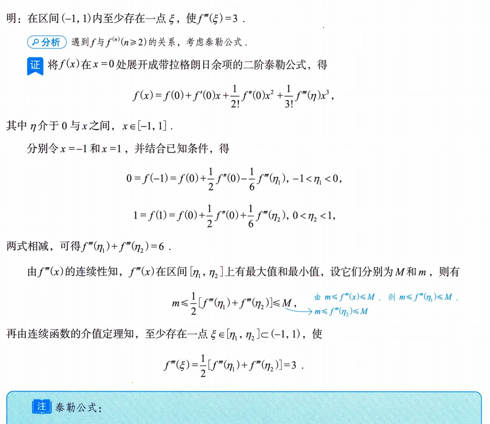
思路 \(f\) 与 \(f'''\) 隔着阶，考虑泰勒公式；在 \(x=0\) 展开（\(f'(0)=0\) 已知），向两个端点 \(x=\pm1\) 代入（端点函数值已知），两式相减消去 \(f(0),f''(0)\)，再用介值定理"平均化"。
要点 ①在 \(x=0\) 处展开：
\[ f(x)=f(0)+f'(0)x+\frac{1}{2}f''(0)x^2+\frac{1}{6}f'''(\eta)x^3,\qquad \eta \text{ 介于 } 0 \text{ 与 } x \text{ 之间}; \]
②分别令 \(x=-1\)、\(x=1\)（注意 \(f'(0)=0\)）：
\[ 0=f(-1)=f(0)+\frac12 f''(0)-\frac16 f'''(\eta_1)\ (-1<\eta_1<0),\qquad 1=f(1)=f(0)+\frac12 f''(0)+\frac16 f'''(\eta_2)\ (0<\eta_2<1); \]
③两式相减得 \(f'''(\eta_1)+f'''(\eta_2)=6\)；④\(f'''\) 连续，在 \([\eta_1,\eta_2]\) 上有最值 \(m,M\)，则 \(m\leqslant\frac12[f'''(\eta_1)+f'''(\eta_2)]=3\leqslant M\)，由介值定理存在 \(\xi\in[\eta_1,\eta_2]\subset(-1,1)\) 使 \(f'''(\xi)=3\)。
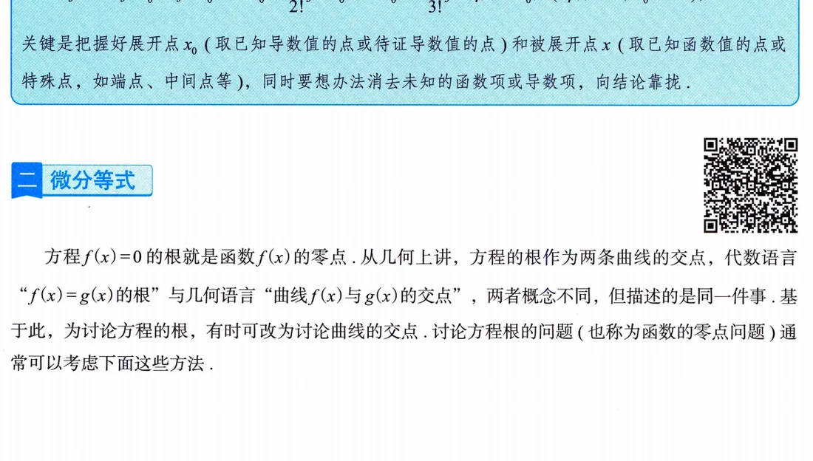
注 原书在解后专门总结了选点方法（印P222）：展开点 \(x_0\) 取"已知导数值的点或待证导数值的点"，被展开点 \(x\) 取"已知函数值的点或特殊点（端点、中间点）"，然后设法消去未知的函数项或导数项，向结论靠拢。这道题就是该方法的完整演示：0 点有 \(f'(0)\)，端点有 \(f(\pm1)\)，代入相减恰好把未知全消掉。
例6.14 根的个数：偶函数 + 单调性（印P223–224）
方程 \(|x|^{\frac{1}{4}}+|x|^{\frac{1}{2}}-\cos x=0\) 在 \((-\infty,+\infty)\) 内（ ）。(A) 无实根 (B) 有且仅有一个实根 (C) 有且仅有两个实根 (D) 有无穷多个实根
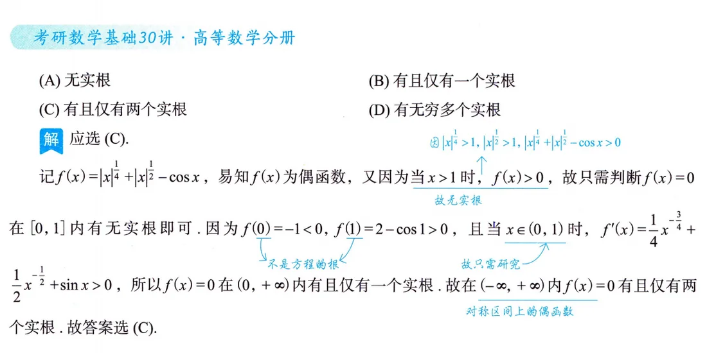
思路 方程左边是偶函数，根关于 \(y\) 轴对称，只需讨论 \((0,+\infty)\)；再由不等式放缩把无穷区间砍短——\(x>1\) 时左边恒正，无根，于是只剩 \((0,1]\) 这一小段，用单调性数根。
要点 记 \(f(x)=|x|^{\frac14}+|x|^{\frac12}-\cos x\)，偶函数。当 \(x>1\) 时 \(|x|^{\frac14}>1\geqslant\cos x\)，故 \(f(x)>0\)，无根；在 \((0,1]\) 上，\(f(0)=-1<0\)，\(f(1)=2-\cos 1>0\)，且
\[ f'(x)=\tfrac14 x^{-\frac34}+\tfrac12 x^{-\frac12}+\sin x>0 \]
（三项全正），\(f\) 单调增加，故 \(f(x)=0\) 在 \((0,1]\) 内恰有一个根；由偶函数对称性，在 \((-\infty,0)\) 内也恰有一个根。全实轴上共两个实根，应选 (C)。原书旁注：令 \(t=|x|^{1/4}\) 可将方程换成 \(t^4\) 结构看着更舒服——含 \(|x|^a\) 的方程，换元降次是常规预处理。
例6.15 判别式 + 奇次方程（印P224）
设 \(3a^2-5b<0\)，则方程 \(x^5+2ax^3+3bx+4c=0\)（ ）。(A) 无实根 (B) 有唯一实根 (C) 有且仅有两个实根 (D) 有无穷多个实根
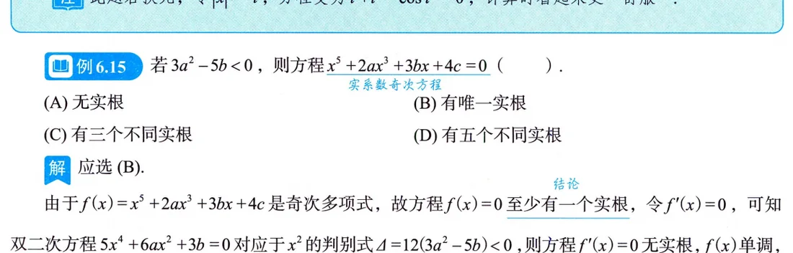
思路 存在性与唯一性两段式：奇次多项式两端极限异号保证至少一根；唯一性看 \(f'(x)\) 的符号——四项式不好直接判号，令 \(t=x^2\) 化成二次再用判别式。
要点 ①存在性：\(f(x)=x^5+2ax^3+3bx+4c\) 是实系数奇次多项式，\(\lim\limits_{x\to+\infty}f(x)=+\infty\)，\(\lim\limits_{x\to-\infty}f(x)=-\infty\)，由推广的零点定理（实系数奇次方程至少有一个实根，印P223）至少有一根；②唯一性：\(f'(x)=5x^4+6ax^2+3b\)，令 \(t=x^2\geqslant 0\)，则 \(5t^2+6at+3b\) 的判别式
\[ \Delta=36a^2-60b=12(3a^2-5b)<0, \]
且首项系数 \(5>0\)，故 \(f'(x)>0\) 恒成立，\(f\) 单调增加，\(f(x)=0\) 至多一根。综上恰有一根，应选 (B)。
例6.16 存在性 + 罗尔原话数上界（印P224–225）
证明：方程 \(2^x-x^2-1=0\) 有且仅有三个实根。
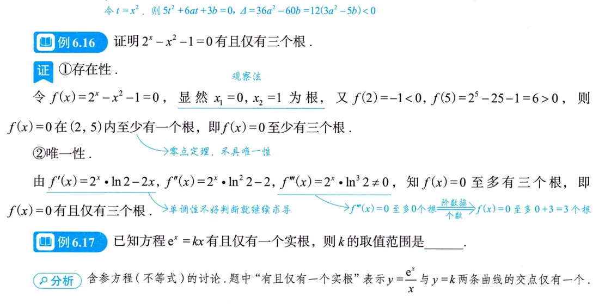
思路 存在性靠观察法 + 零点定理找够三个根；"仅有"靠罗尔原话给个数上界——单调性不好判断就继续求导，"以阶数换个数"。
要点 ①存在性：令 \(f(x)=2^x-x^2-1\)，直接观察 \(x_1=0\)（\(1-0-1=0\)）、\(x_2=1\)（\(2-1-1=0\)）为根；又 \(f(2)=4-4-1=-1<0\)，\(f(5)=32-25-1=6>0\)，由零点定理 \((2,5)\) 内至少一根 \(x_3\)，且 \(x_3\neq x_1,x_2\)，故至少有三个根；②上界：逐阶求导
\[ f'(x)=2^x\ln 2-2x,\qquad f''(x)=2^x\ln^2 2-2,\qquad f'''(x)=2^x\ln^3 2\neq 0, \]
即 \(f'''(x)=0\) 无实根（至多 0 个），由罗尔原话逐层上推：\(f''(x)=0\) 至多 1 个根，\(f'(x)=0\) 至多 2 个根，\(f(x)=0\) 至多 \(0+3=3\) 个根；③两者夹住：有且仅有三个根。
例6.17 零点个数：奇函数 + 驻点分区间（印P225）
函数 \(f(x)=x-2\sin x\) 的零点个数为（ ）。(A) 3 (B) 2 (C) 1 (D) 无穷多个
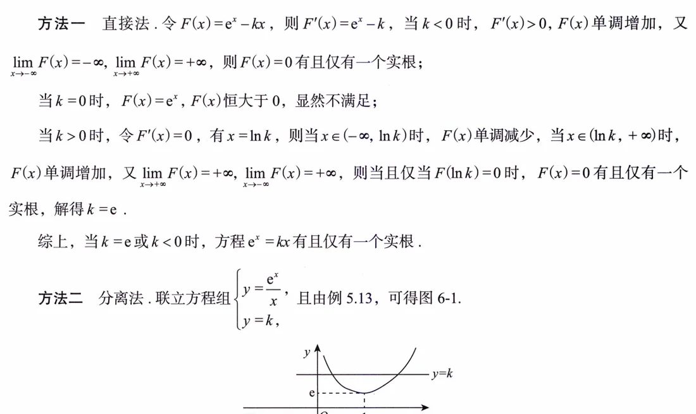
思路 奇函数零点关于原点对称，\(x=0\) 是一个零点，只需数清 \((0,+\infty)\) 内的零点个数再翻倍。导数 \(f'=1-2\cos x\) 的零点无穷多，不能全列——用前两个驻点分区间，配函数值符号收尾。
要点 ①\(f\) 为奇函数，\(f(0)=0\)；②在 \(x\geqslant 0\) 上 \(f'(x)=1-2\cos x\)，令 \(f'(x)=0\) 得 \(\cos x=\tfrac12\)，取 \(x=\tfrac{\pi}{3},\ \tfrac{5\pi}{3}\)（后续驻点函数值都已为正，不必再讨论：\(f(\tfrac{7\pi}{3})=\tfrac{7\pi}{3}-\sqrt3>0\) 之后的极小值点函数值全是正的，且 \(x\to+\infty\) 时 \(f(x)\to+\infty\)）；③算值：\(f(\tfrac{\pi}{3})=\tfrac{\pi}{3}-\sqrt3<0\)，\(f(\tfrac{5\pi}{3})=\tfrac{5\pi}{3}+\sqrt3>0\)。于是 \((0,\tfrac{\pi}{3}]\) 上 \(f\) 由 0 递减为负，无零点；\((\tfrac{\pi}{3},\tfrac{5\pi}{3})\) 上由负增到正，恰一个零点；此后 \(f\) 的各极小值点函数值均正，无零点。故 \((0,+\infty)\) 内恰 1 个零点；④由奇函数对称性，\((-\infty,0)\) 内恰 1 个零点，加上 \(x=0\)，共 3 个，应选 (A)。
例6.18 含参方程 \(e^x=kx\) 的根个数（印P225–226）
讨论方程 \(\mathrm{e}^x=kx\) 实根的个数（\(k\) 为常数）。
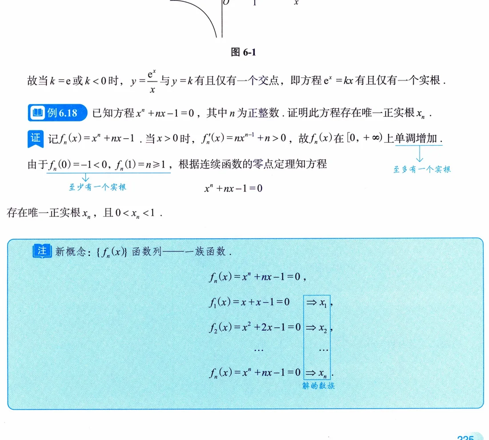
思路 含参方程根个数是本讲题型的大满贯：方法一"直接法"——移项令 \(F(x)=\mathrm{e}^x-kx\)，按 \(k\) 的符号分类，用最值（极值）定位；方法二"曲线相交法"——看 \(y=\mathrm{e}^x\) 与直线 \(y=kx\) 的交点，切线情形 \(k=\mathrm{e}\)（切点 \((1,\mathrm{e})\)）是临界（印P226）。
要点（方法一） 令 \(F(x)=\mathrm{e}^x-kx\)，\(F'(x)=\mathrm{e}^x-k\)：
- \(k<0\)：\(F'(x)>0\)，\(F\) 单调增加，且 \(\lim\limits_{x\to-\infty}F=-\infty\)，\(\lim\limits_{x\to+\infty}F=+\infty\)，恰有一个零点；
- \(k=0\)：方程即 \(\mathrm{e}^x=0\)，无根；
- \(k>0\)：令 \(F'(x)=0\) 得唯一驻点 \(x=\ln k\)，\(F(\ln k)=k(1-\ln k)\) 为极小值（也是最小值，\(F''=\mathrm{e}^x>0\)）。当 \(0<k<\mathrm{e}\) 时最小值为正，无根；\(k=\mathrm{e}\) 时最小值为 0，恰一根（\(x=1\)）；\(k>\mathrm{e}\) 时最小值为负，而两端 \(F\to+\infty\)，恰两根。
结论：\(k<0\) 时 1 个；\(k\geqslant 0\) 时，\(k=\mathrm{e}\) 恰 1 个，\(0\leqslant k<\mathrm{e}\) 无根（\(k=0\) 含在内），\(k>\mathrm{e}\) 时 2 个。这类题的骨架就是"极值定位 + 端点极限定向"，参数的一切临界值都从"极值恰好取到 0"解出来。
例6.19 单调性 vs 凹凸性证 \(\sin x>\frac{2x}{\pi}\)（印P226–227）
证明：当 \(0<x<\dfrac{\pi}{2}\) 时，\(\sin x>\dfrac{2x}{\pi}\)。
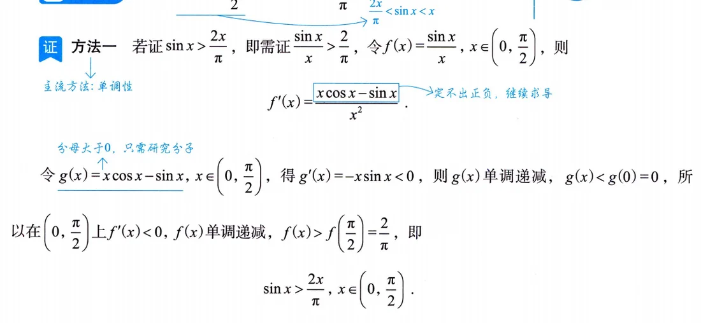
思路 方法一化为 \(\dfrac{\sin x}{x}>\dfrac{2}{\pi}\) 走单调性（主流方法，导数定不了号就再求一次导）；方法二直接对 \(f(x)=\sin x-\dfrac{2x}{\pi}\) 用凹凸性——正弦弧在弦上方。
要点（方法一） ①令 \(f(x)=\dfrac{\sin x}{x}\)，\(f'(x)=\dfrac{x\cos x-\sin x}{x^2}\)，分子符号不定；②令 \(g(x)=x\cos x-\sin x\)，则 \(g'(x)=-x\sin x<0\) 于 \((0,\tfrac{\pi}{2})\)，故 \(g(x)<g(0)=0\)，于是 \(f'(x)<0\)，\(f\) 在 \((0,\tfrac{\pi}{2})\) 单调递减，从而
\[ f(x)>f\!\left(\tfrac{\pi}{2}\right)=\frac{2}{\pi}, \]
即 \(\sin x>\dfrac{2x}{\pi}\)。"导数符号定不了就接着求导"是最常用的一步后手。
要点（方法二） 令 \(f(x)=\sin x-\dfrac{2x}{\pi}\)，则 \(f''(x)=-\sin x<0\)，曲线在 \((0,\tfrac{\pi}{2})\) 内是凸的（凸弧在弦上方），又 \(f(0)=f(\tfrac{\pi}{2})=0\)，故 \(f(x)>0\)（印P227）——正是函数性态依据第 (4) 条的凹凸反向版。
例6.20 先去绝对值，再单调性 + 极限定号（印P227）
证明：当 \(x>0\) 时，\(\left[\ln\dfrac{1+x}{x}-\dfrac{1}{1+x}\right]^2<\dfrac{1}{x(1+x)^2}\)。
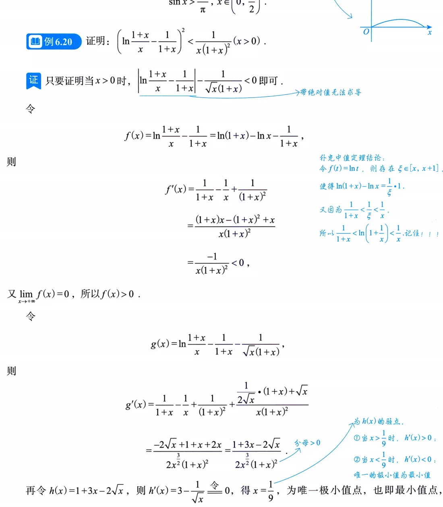
思路 带平方（绝对值）无法直接求导，先证括号内函数为正，把平方拆成"左边>0 且 左边<右边"两个不等式；左边用"单调 + 极限定号"，右边构造差函数，其导数符号又交给一个二次型极小值判断。
要点 记 \(f(x)=\ln\dfrac{1+x}{x}-\dfrac{1}{1+x}\)。①证 \(f(x)>0\)：
\[ f'(x)=\frac{1}{1+x}-\frac{1}{x}+\frac{1}{(1+x)^2}=-\frac{1}{x(1+x)^2}<0, \]
且 \(\lim\limits_{x\to+\infty}f(x)=0\)，\(f\) 单调减少趋于 0，故 \(f(x)>0\)。②证 \(f(x)<\dfrac{1}{\sqrt{x}(1+x)}\)：令 \(g(x)=f(x)-\dfrac{1}{\sqrt{x}(1+x)}\)，则
\[ g'(x)=-\frac{1}{x(1+x)^2}+\frac{1+3x}{2x\sqrt{x}(1+x)^2}=\frac{1+3x-2\sqrt{x}}{2x\sqrt{x}(1+x)^2}, \]
分子 \(h(x)=1+3x-2\sqrt{x}\)：\(h'(x)=3-\dfrac{1}{\sqrt{x}}=0\) 得唯一驻点 \(x=\tfrac19\)，\(h(\tfrac19)=1+\tfrac13-\tfrac23=\tfrac23>0\)（唯一极小值即最小值），故 \(h(x)>0\)，\(g'(x)>0\)，\(g\) 单调增加且 \(\lim\limits_{x\to+\infty}g(x)=0\)，故 \(g(x)<0\)。③合并：\(0<f(x)<\dfrac{1}{\sqrt{x}(1+x)}\)，两边平方即得结论。
注 原书旁注在这里补充了一个值得记住的结论（印P227）：当 \(x>0\) 时
\[ \frac{1}{1+x}<\ln\left(1+\frac{1}{x}\right)<\frac{1}{x}, \]
它由对 \(\ln t\) 在 \([x,x+1]\) 上用拉格朗日中值定理立得（\(a<\xi<b\Rightarrow\frac{1}{x+1}<\frac{1}{\xi}<\frac{1}{x}\)），本例的 \(f(x)\) 正是这两个界的平均形态的精细版。
例6.21 双边不等式：单调性 + 拉格朗日（印P228）
设 \(0<a<b\)，证明：\(\dfrac{2a}{a^2+b^2}<\dfrac{\ln b-\ln a}{b-a}<\dfrac{1}{\sqrt{ab}}\)。
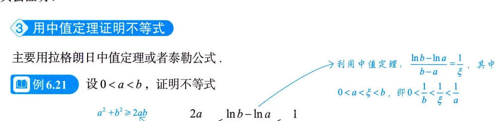
思路 中间量 \(\dfrac{\ln b-\ln a}{b-a}\) 正是 \(\ln x\) 的拉格朗日增量商，所以左边天然用拉格朗日 + 放缩；右边是"新函数比老函数大"型，用常数变量化 + 单调性。
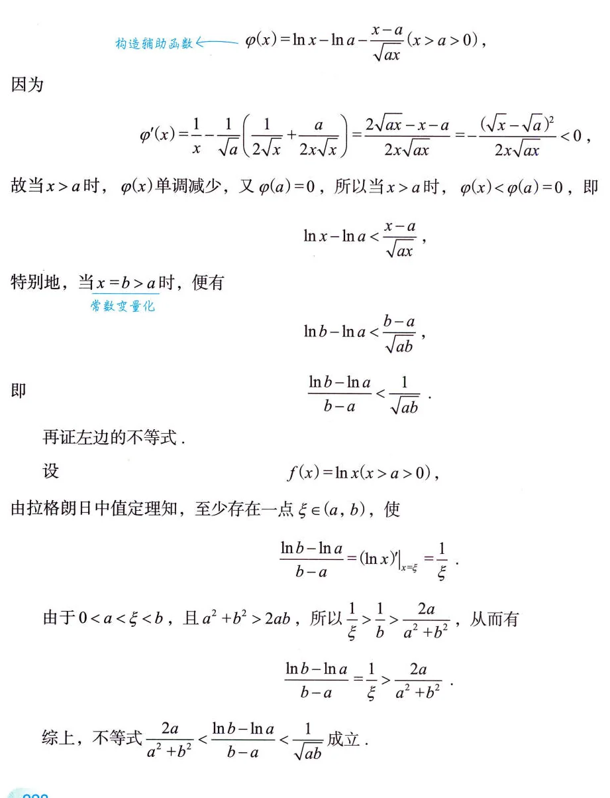
要点（右边） 把 \(b\) 换成变量 \(x>a\)，构造 \(\varphi(x)=\ln x-\ln a-\dfrac{x-a}{\sqrt{ax}}\ (x>a>0)\)，则
\[ \varphi'(x)=\frac{1}{x}-\frac{\sqrt{ax}-(x-a)\cdot\frac{\sqrt a}{2\sqrt x}}{ax}=\frac{2\sqrt{ax}-x-a}{2x\sqrt{ax}}=-\frac{(\sqrt{x}-\sqrt{a})^2}{2x\sqrt{ax}}<0, \]
故 \(x>a\) 时 \(\varphi(x)<\varphi(a)=0\)，即 \(\ln x-\ln a<\dfrac{x-a}{\sqrt{ax}}\)；常数变量化——把结论中的 \(b\) 看作这里的 \(x\)（取 \(x=b\)），得 \(\dfrac{\ln b-\ln a}{b-a}<\dfrac{1}{\sqrt{ab}}\)。
要点（左边） 对 \(f(x)=\ln x\) 在 \([a,b]\) 上用拉格朗日中值定理：
\[ \frac{\ln b-\ln a}{b-a}=(\ln x)'\big|_{x=\xi}=\frac{1}{\xi},\qquad a<\xi<b; \]
由 \(0<a<\xi<b\) 得 \(\dfrac{1}{\xi}>\dfrac{1}{b}\)；又 \(a^2+b^2>2ab\Rightarrow\dfrac{2a}{a^2+b^2}<\dfrac{2a}{2ab}=\dfrac{1}{b}\)，于是
\[ \frac{\ln b-\ln a}{b-a}=\frac{1}{\xi}>\frac{1}{b}>\frac{2a}{a^2+b^2}. \]
注 双边不等式两半往往来自两条不同路径（这里右边函数性态、左边中值定理），别指望一个辅助函数通吃；\(a^2+b^2\geqslant 2ab\) 这类基础不等式就是"最后一步放缩"的常客。
易错点与技巧
- 罗尔三条件缺一不可，考试爱在端点上做文章：题给 \(\lim\limits_{x\to 0^+}\frac{f(x)}{x}\) 存在（有限）且 \(f\) 连续，要先推出 \(f(0)=0\) 才能用罗尔；端点无定义或无穷区间，用推广的罗尔定理（端点极限相等即可，例6.7，印P215、217）。
- 辅助函数构造表背下来（印P215–216）：见 \(f(x)f'(x)\Rightarrow f^2(x)\)；见 \([f'(x)]^2+f(x)f''(x)\Rightarrow f(x)f'(x)\)；见 \(f'(x)+\lambda f(x)\Rightarrow f(x)\mathrm{e}^{\lambda x}\)；见 \(xf'(x)-f(x)\Rightarrow\frac{f(x)}{x}\)；见 \(f(x)f''(x)-[f'(x)]^2\Rightarrow\frac{f'(x)}{f(x)}\) 或 \(\ln f(x)\)；兜底通法 \(f'+\varphi'f=0\Rightarrow F=f\mathrm{e}^{\int\varphi\mathrm{d}x}\)（例6.5）。
- 题里出现 \(\xi,\eta\) 两个中值时，允许对同一函数在不同子区间分别用定理，两次取的点不必相同（习题6.6、6.7，印P231）；分区间取点的思想在例6.17（驻点分段）里也用到。
- 柯西中值定理不能拆成两个拉格朗日相除——两个 \(\xi\) 未必相同；它是参数方程视角下的同一个 \(\xi\)（印P219）。
- 柯西配函数口诀"分母想凑什么就配什么"（例6.11，印P219）；\(g'(x)\neq 0\) 的验证别漏（对 \(\ln x\) 配函数时区间须落在 \(x>0\)）。
- 泰勒公式选点口诀（印P222）：展开点取已知（或待证）导数值的点，被展开点取已知函数值的点（端点、中点），代入后相加减消未知项。例6.13 是模板。
- 泰勒公式里的 \(f''(\xi)\) 不能随意提到积分号外：例6.12 中 \(\xi=\xi(x)\) 与 \(x\) 有关，不是常数（印P221–222）；正确做法是利用余项的符号直接说积分的符号。
- 方向判断（印P217）：证 \(f^{(n)}(\xi)=0\) 优先罗尔（多次罗尔：\(f''\) 找 \(f'\) 的两个等值点，\(f'\) 的等值点来自 \(f\) 的三个零点）；证 \(f^{(n)}(\xi)\neq 0\) 或 \(f^{(n)}(\xi)\geqslant c\) 优先泰勒（在极值点或端点展开，习题6.8，印P232）。
- 方程根问题的标准结构是两段式：存在性（零点定理/罗尔/奇次方程结论）+ 唯一性或个数上界（单调性/罗尔原话），例6.15、6.16、6.17、6.18 都是这个骨架（印P223–226）。"至多 \(k\) 个根"和"至少 \(k\) 个根"要分开证，夹逼才得"恰有"。
- 罗尔原话的方向别记反：\(f^{(n)}=0\) 无根（或至多 \(k\) 根）\(\Rightarrow f=0\) 至多 \(n\)（\(k+n\)）个根；是"导数管上界"，不给出存在性（印P223）。
- 用拉格朗日处理开区间问题要先固定一个基准点 \(x_0\)，估计式 \(|f(x)|\leqslant|f(x_0)|+M(b-a)\) 中 \(b-a\) 是区间长度（例6.8、6.9，印P218）。
- 证不等式时若待证式带绝对值或平方，先证内层函数的符号再去绝对值（例6.20，印P227）；导数符号定不了号就再求一次导（例6.19 的 \(g=x\cos x-\sin x\)，印P226）。
- 含 \(|x|^{\alpha}\) 的方程先想偶函数对称性 + 换元 \(t=|x|^{\alpha}\) 降次（例6.14，印P224）；超越方程的整数根靠观察法（\(x=0,1\) 先试），观察法找到的根不能重复计数。
考点与方法补充（站注）
以下均为站注，不是原书内容；数学事实一律以原书为准。
- 考频定位（站注·真题大数据）：中值定理证明属于第二梯队考频——"隔年一道大题"，15 年真题里出现 10 次以上；不像极限计算年年必考，但一出手就是解答题 10 分以上，数一数二数三都躲不掉。高频题型正是本讲三大件：构造辅助函数（乘积/商求导公式的逆用）、泰勒在端点/中点展开、双中值问题。
- 张宇方法论：证明题不能放弃（站注）：张宇在公开课和访谈里反复强调，中值定理、积分不等式这类证明题是数一数二大题常客，"平时不动手，考场上写不出来"。本讲 20 道例题里证明题占绝对多数，他的建议是尽快结束纯听课阶段、自己动笔——这跟我自己刷这讲的感觉一致：看例6.7、例6.13 的解答都"看得懂"，合上书从头构造辅助函数，八成卡在第一步。
- 结构分值背景（站注）：数学一/三卷面高数占 56%（约 82/150 分），数学二占 78%；中值定理大题一旦出现，基本落在"一元函数微分学"的命题盘子里，跟第5讲的几何应用共享命题空间。
- 与第5讲的衔接（站注）：方程根的个数讨论在第5讲（单调性、极值、函数图形）已经作为应用出场，本讲把它升级成"存在性 + 个数上界"的完整两段式；例6.18 的含参讨论就是两讲合体——第5讲给工具（极值定位、端点极限），本讲给框架（零点定理 + 罗尔原话）。复习时建议两讲连做。
- 与第11讲的衔接（站注）：第11讲"积分等式与不等式"里变限积分构造函数 + 单调性那套，本质是把本讲的辅助函数功夫平移到 \(\int_a^x f(t)\mathrm{d}t\) 上；本讲例6.12（泰勒 + 积分）已经提前演示了"积分条件怎么进泰勒"。本讲学扎实，第11讲可以省一半力气。
- 辅助函数的"侦探式"反推（站注·学习方法）：构造表不要死背，考场上按两步反推——第一步把结论中的 \(\xi\) 全换成 \(x\)、移项使一边为 0；第二步问"这是哪个函数的导数（的分子）"，对照乘积/商逆用表，对不上就上 \(f\mathrm{e}^{\int\varphi\mathrm{d}x}\) 通法。本讲例6.5、例6.7、习题6.7 都能这样现场推出来。
- 真题使用提醒（站注）：中值定理真题至少做近十年的（含双中值、泰勒 + 介值、积分中值综合）；检验标准沿用通用版——随机抽 5 道中值定理大题独立完成，构造辅助函数这步不卡壳才算过关。2010 年以前的题风格差异大，参考价值有限。
知识清单自测
自测题
1. 默写罗尔定理的条件与结论，并叙述推广的罗尔定理。
查看答案
解 罗尔定理：设 \(f(x)\) 满足①在 \([a,b]\) 上连续；②在 \((a,b)\) 内可导；③\(f(a)=f(b)\)，则存在 \(\xi\in(a,b)\)，使 \(f'(\xi)=0\)。
推广的罗尔定理：设 \(f(x)\) 在 \((a,b)\) 内可导，且 \(\lim\limits_{x\to a^+}f(x)=\lim\limits_{x\to b^-}f(x)=A\)，则在 \((a,b)\) 内至少存在一点 \(\xi\)，使 \(f'(\xi)=0\)；其中 \((a,b)\) 可以是无穷区间，\(A\) 可以是无穷大（印P215）。
2. 设 \(f(x)\) 在 \([0,1]\) 上连续，在 \((0,1)\) 内可导，且 \(f(0)=0\)，\(f(1)=1\)。证明：存在 \(\xi\in(0,1)\)，使 \(f(\xi)=1-\xi\)。
查看答案
解 令 \(F(x)=f(x)-1+x\)，则 \(F\) 在 \([0,1]\) 上连续，且 \(F(0)=f(0)-1=-1<0\)，\(F(1)=f(1)-1+1=1>0\)。由零点定理，存在 \(\xi\in(0,1)\) 使 \(F(\xi)=0\)，即 \(f(\xi)=1-\xi\)（习题6.6(1)，印P231）。
3. 设 \(3a^2-5b<0\)。证明：方程 \(x^5+2ax^3+3bx+4c=0\) 有且仅有一个实根。
查看答案
解 令 \(f(x)=x^5+2ax^3+3bx+4c\)。
①存在性：\(f\) 是实系数奇次多项式，\(\lim\limits_{x\to+\infty}f(x)=+\infty\)，\(\lim\limits_{x\to-\infty}f(x)=-\infty\)，由推广的零点定理（实系数奇次方程至少有一个实根，印P223）知 \(f(x)=0\) 至少有一个实根。
②唯一性：\(f'(x)=5x^4+6ax^2+3b\)。令 \(t=x^2\)，则 \(5t^2+6at+3b=0\) 的判别式 \(\Delta=36a^2-60b=12(3a^2-5b)<0\)，且首项系数 \(5>0\)，故 \(f'(x)>0\) 恒成立，\(f\) 单调增加，\(f(x)=0\) 至多有一个根。综上，方程有且仅有一个实根（即例6.15 的证明题版本，印P224）。
4. 证明：当 \(0<x<\dfrac{\pi}{4}\) 时，\(\tan x<\dfrac{4}{\pi}x\)。
查看答案
解 令 \(f(x)=\tan x-\dfrac{4}{\pi}x\)，\(x\in\left[0,\dfrac{\pi}{4}\right]\)，则
\[ f'(x)=\sec^2 x-\frac{4}{\pi},\qquad f''(x)=2\sec^2 x\tan x>0, \]
所以曲线在 \(\left(0,\dfrac{\pi}{4}\right)\) 内是凹（下凸）的。又 \(f(0)=f\left(\dfrac{\pi}{4}\right)=0\)，故在 \(\left(0,\dfrac{\pi}{4}\right)\) 内 \(f(x)<0\)，即 \(\tan x<\dfrac{4}{\pi}x\)（习题6.9，印P230、232；这是例6.19 方法二的孪生题，注意凹凸方向与端点为零的配合）。
5. 设 \(f(x)\) 在 \([0,1]\) 上二阶可导，\(f(0)=f(1)=0\)，且 \(\min\limits_{x\in[0,1]}f(x)=-1\)，证明：存在 \(\xi\in(0,1)\)，使 \(f''(\xi)\geqslant 8\)。
查看答案
解 设最小值在 \(x_0\in(0,1)\) 处取得（端点值为 0 而最小值为 \(-1\)，故 \(x_0\) 是内点），则 \(f(x_0)=-1\)，且由费马定理 \(f'(x_0)=0\)。在 \(x_0\) 处作泰勒展开（带拉格朗日余项），分别代入 \(x=0\) 和 \(x=1\)：
\[ 0=f(0)=f(x_0)+f'(x_0)(0-x_0)+\frac{f''(\xi_1)}{2}x_0^2=-1+\frac{f''(\xi_1)}{2}x_0^2,\quad 0<\xi_1<x_0, \]
\[ 0=f(1)=f(x_0)+f'(x_0)(1-x_0)+\frac{f''(\xi_2)}{2}(1-x_0)^2=-1+\frac{f''(\xi_2)}{2}(1-x_0)^2,\quad x_0<\xi_2<1. \]
于是 \(f''(\xi_1)=\dfrac{2}{x_0^2}\)，\(f''(\xi_2)=\dfrac{2}{(1-x_0)^2}\)。若 \(0<x_0\leqslant\dfrac12\)，取 \(\xi=\xi_1\)，则 \(f''(\xi)\geqslant\dfrac{2}{(1/2)^2}=8\)；若 \(\dfrac12\leqslant x_0<1\)，取 \(\xi=\xi_2\)，同样 \(f''(\xi)\geqslant 8\)。故总存在 \(\xi\in(0,1)\) 使 \(f''(\xi)\geqslant 8\)（习题6.8，印P231–232；"最小值点 + 费马清掉一阶项 + 两端展开按 \(x_0\) 位置择优"是这套证法的三步）。
6. 设 \(f(x)\) 在 \([0,1]\) 上连续，在 \((0,1)\) 内可导，\(f(0)=0,\ f(1)=1\)。证明：存在 \(\xi,\eta\in(0,1)\)，\(\xi\neq\eta\)，使 \(f'(\xi)+f'(\eta)=2\)。
查看答案
解 取分点 \(c=\tfrac12\)，把 \([0,1]\) 分成两个子区间，各用一次拉格朗日中值定理（两次的中值点允许不同）：在 \([0,c]\) 上，存在 \(\xi\in(0,c)\) 使
\[ f'(\xi)=\frac{f(c)-f(0)}{c-0}=2f\!\left(\tfrac12\right); \]
在 \([c,1]\) 上，存在 \(\eta\in(c,1)\) 使
\[ f'(\eta)=\frac{f(1)-f(c)}{1-c}=2\left[1-f\!\left(\tfrac12\right)\right]. \]
两式相加即 \(f'(\xi)+f'(\eta)=2\)，且 \(\xi<\tfrac12<\eta\) 必不相同（经典真题变式，双中值问题的标准处理：按结论拆成两个子区间，各取各的中值）。